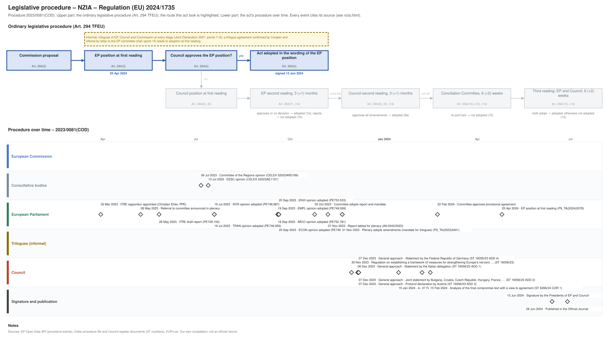

← All procedures · Regulation timeline
Procedure 2023/0081(COD), completed. Drawing: SVG · PNG · PDF (A3) · draw.io

| Date | Actor | Event | Document | Source |
|---|---|---|---|---|
| 2023-03-30 | European Parliament | ITRE rapporteur appointed (Christian Ehler, PPE) | EP Open Data API, procedure 2023-0081 (participation RAPPORTEUR) | |
| 2023-05-08 | European Parliament | Referral to committee announced in plenary | EP Open Data API, procedure 2023-0081 (REFERRAL) | |
| 2023-05-26 | European Parliament | ITRE draft report | PE749.154 | EP Open Data API, procedure 2023-0081 (COMMITTEE_TABLING_REPORT) |
| 2023-07-06 | Consultative bodies | Committee of the Regions opinion | CELEX 52023AR2189 | Cellar procedure file 2023/81 |
| 2023-07-13 | Consultative bodies | EESC opinion | CELEX 52023AE1157 | Cellar procedure file 2023/81 |
| 2023-07-19 | European Parliament | INTA opinion adopted | PE748.987 | EP Open Data API, procedure 2023-0081 (COMMITTEE_ADOPTING_OPINION) |
| 2023-07-19 | European Parliament | TRAN opinion adopted | PE749.959 | EP Open Data API, procedure 2023-0081 (COMMITTEE_ADOPTING_OPINION) |
| 2023-09-19 | European Parliament | EMPL opinion adopted | PE749.069 | EP Open Data API, procedure 2023-0081 (COMMITTEE_ADOPTING_OPINION) |
| 2023-09-19 | European Parliament | IMCO opinion adopted | PE752.781 | EP Open Data API, procedure 2023-0081 (COMMITTEE_ADOPTING_OPINION) |
| 2023-09-20 | European Parliament | ENVI opinion adopted | PE753.533 | EP Open Data API, procedure 2023-0081 (COMMITTEE_ADOPTING_OPINION) |
| 2023-09-20 | European Parliament | REGI opinion adopted | PE753.568 | EP Open Data API, procedure 2023-0081 (COMMITTEE_ADOPTING_OPINION) |
| 2023-09-20 | European Parliament | ECON opinion adopted | PE749.279 | EP Open Data API, procedure 2023-0081 (COMMITTEE_ADOPTING_OPINION) |
| 2023-10-25 | European Parliament | Committee adopts report and mandate | EP Open Data API, procedure 2023-0081 (COMMITTEE_ADOPTING_REPORT) | |
| 2023-11-07 | European Parliament | Report tabled for plenary | A9-0343/2023 | EP Open Data API, procedure 2023-0081 (TABLING_PLENARY) |
| 2023-11-21 | European Parliament | Plenary refers back for trilogues | EP Open Data API, procedure 2023-0081 (PLENARY_REFER_COMMITTEE_INTERINSTITUTIONAL_NEGOTIATIONS) | |
| 2023-11-21 | European Parliament | Plenary adopts amendments (mandate for trilogues) | P9_TA(2023)0401 | EP Open Data API, procedure 2023-0081 (PLENARY_AMEND) |
| 2023-11-30 | Council | Regulation on establishing a framework of measures for strengthening Europe’s net-zero … | ST 16056/23 | Cellar procedure file 2023/81 (Council register) |
| 2023-12-06 | Council | General approach - Statement by the Italian delegation | ST 16056/23 ADD 1 | Cellar procedure file 2023/81 (Council register) |
| 2023-12-07 | Council | General approach - Joint statement by Bulgaria, Croatia, Czech Republic, Hungary, France, … | ST 16056/23 ADD 2 | Cellar procedure file 2023/81 (Council register) |
| 2023-12-07 | Council | General approach - Protocol declaration by Austria | ST 16056/23 ADD 3 | Cellar procedure file 2023/81 (Council register) |
| 2023-12-07 | Council | General approach - Statement by the Federal Republic of Germany | ST 16056/23 ADD 4 | Cellar procedure file 2023/81 (Council register) |
| 2024-01-15 | Council | 4-column document | ST 5334/24 | Cellar procedure file 2023/81 (Council register) |
| 2024-02-07 | Council | Analysis of the final compromise text with a view to agreement | ST 6266/24 | Cellar procedure file 2023/81 (Council register) |
| 2024-02-15 | Council | Analysis of the final compromise text with a view to agreement | ST 6266/24 COR 1 | Cellar procedure file 2023/81 (Council register) |
| 2024-02-22 | European Parliament | Committee approves provisional agreement | EP Open Data API, procedure 2023-0081 (COMMITTEE_APPROVE_PROVISIONAL_AGREEMENT) | |
| 2024-04-25 | European Parliament | EP position at first reading (Art. 294(3) TFEU) | P9_TA(2024)0378 | EP Open Data API, procedure 2023-0081 (PLENARY_AMEND_PROPOSAL) |
| 2024-06-13 | Signature and publication | Signature by the Presidents of EP and Council | EP Open Data API, procedure 2023-0081 (SIGNATURE) | |
| 2024-06-28 | Signature and publication | Published in the Official Journal | EP Open Data API, procedure 2023-0081 (PUBLICATION_OFFICIAL_JOURNAL) |
| Date | Document | Kind | Subject |
|---|---|---|---|
| 2023-05-26 | PE749.154 | ep-draft-report | DRAFT REPORT on the proposal for a regulation of the European Parliament and of the Council on establishing a framework of measures for strengthening Europe’s … |
| 2023-05-31 | PE749.069 | ep-draft-opinion | DRAFT OPINION on the proposal for a regulation of the European Parliament and of the Council on establishing a framework of measures for strengthening Europe’s … |
| 2023-06-01 | PE748.987 | ep-draft-opinion | DRAFT OPINION on the proposal for a regulation of the European Parliament and of the Council Establishing a framework of measures for strengthening Europe’s … |
| 2023-06-06 | PE749.279 | ep-draft-opinion | DRAFT OPINION on the proposal for a regulation of the European Parliament and of the Council on establishing a framework of measures for strengthening Europe’s … |
| 2023-06-22 | PE749.959 | ep-draft-opinion | DRAFT OPINION on the proposal for a regulation of the European Parliament and of the Council on establishing a framework of measures for strengthening Europe’s … |
| 2023-07-06 | CELEX 52023AR2189 | opinion | Opinion of the European Committee of the Regions – The Net-Zero Industry Act |
| 2023-07-13 | CELEX 52023AE1157 | opinion | Opinion of the European Economic and Social Committee on ‘a) Communication from the Commission to the European Parliament, the European Council, the Council, … |
| 2023-07-20 | PE748.987 | ep-opinion | OPINION on the proposal for a regulation of the European Parliament and of the Council Establishing a framework of measures for strengthening Europe’s net-zero … |
| 2023-07-20 | PE749.959 | ep-opinion | OPINION on the proposal for a regulation of the European Parliament and of the Council on establishing a framework of measures for strengthening Europe’s … |
| 2023-09-20 | PE752.781 | ep-opinion | OPINION on the proposal for a regulation of the European Parliament and of the Council on establishing a framework of measures for strengthening Europe’s … |
| 2023-09-26 | PE753.533 | ep-opinion | OPINION on the proposal for a regulation of the European Parliament and of the Council on establishing a framework of measures for strengthening Europe's … |
| 2023-09-26 | PE753.568 | ep-opinion | OPINION on the proposal for a regulation of the European Parliament and of the Council on establishing a framework of measures for strengthening Europe’s … |
| 2023-10-09 | PE749.069 | ep-opinion | OPINION on the proposal for a regulation of the European Parliament and of the Council on establishing a framework of measures for strengthening Europe’s … |
| 2023-10-09 | PE749.279 | ep-opinion | OPINION on the proposal for a regulation of the European Parliament and of the Council on establishing a framework of measures for strengthening Europe’s … |
| 2023-11-07 | A9-0343/2023 | ep-report | REPORT on the proposal for a regulation of the European Parliament and of the Council on establishing a framework of measures for strengthening Europe’s … |
| 2023-11-21 | P9_TA(2023)0401 | ep-position | Framework of measures for strengthening Europe’s net-zero technology products manufacturing ecosystem (Net Zero Industry Act) |
| 2023-11-30 | ST 16056/23 | council-position | Regulation on establishing a framework of measures for strengthening Europe’s net-zero technology products manufacturing ecosystem (Net Zero Industry Act) - … |
| 2023-12-06 | ST 16056/23 ADD 1 | council-position | General approach - Statement by the Italian delegation |
| 2023-12-07 | ST 16056/23 ADD 2 | council-position | General approach - Joint statement by Bulgaria, Croatia, Czech Republic, Hungary, France, Poland, Romania, Slovakia, Slovenia |
| 2023-12-07 | ST 16056/23 ADD 3 | council-position | General approach - Protocol declaration by Austria |
| 2023-12-07 | ST 16056/23 ADD 4 | council-position | General approach - Statement by the Federal Republic of Germany |
| 2024-01-15 | ST 5334/24 | trilogue | 4-column document |
| 2024-02-07 | ST 6266/24 | agreed-text | Analysis of the final compromise text with a view to agreement |
| 2024-02-15 | ST 6266/24 COR 1 | agreed-text | Analysis of the final compromise text with a view to agreement |
| 2024-04-25 | P9_TA(2024)0378 | ep-position | Framework of measures for strengthening Europe’s net-zero technology products manufacturing ecosystem |
{kind=link}
{kind=link}